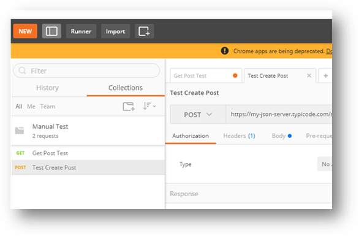
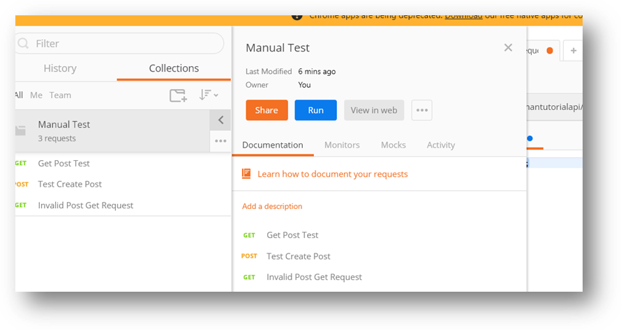
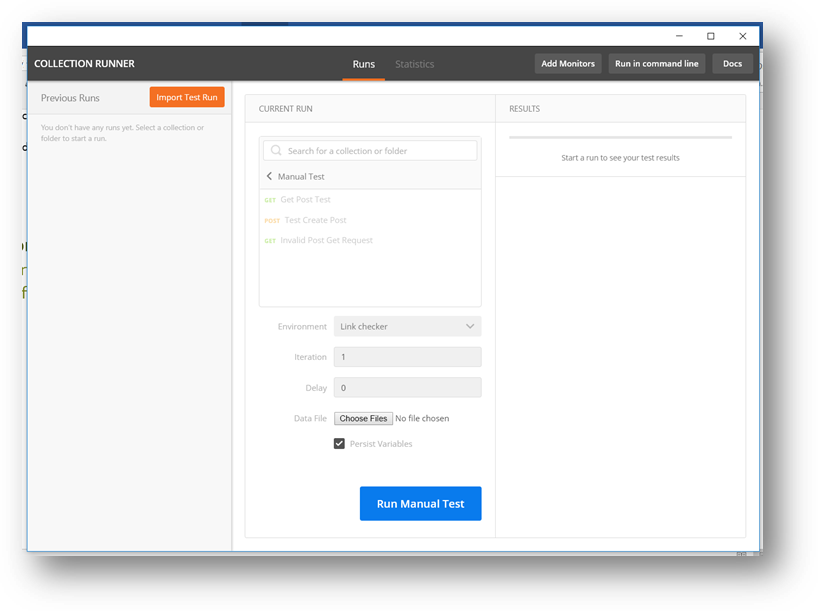
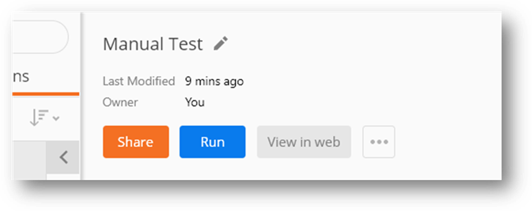
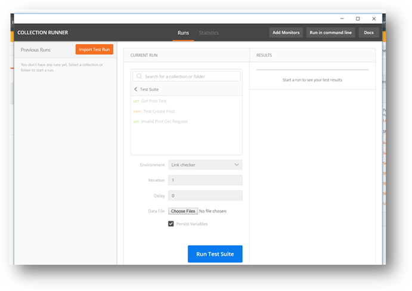
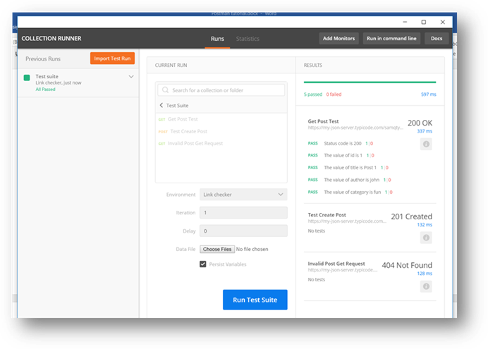

One of the other feature provided by post man is the ability to save your requests together under a directory kind of structure and the ability to run them all together without the need to open each one. In the previous section, when we attempted to save the get request, it had forced us to create a collection. That is basically the simplest way to create a collection. In this section we will walk through how to quickly run requests saved under a collection.
- Continuing from the previous step, the collection you created so far can be found on the left panel of the post man UI, as shown in the screenshot below

- You should see the manual test collection (among others, I have deleted system generated ones, you might see others). Click on the right arrow button to see options for the collections.

- This will issue all the requests in that collection and run all the tests in the suit. And you will get a grand summary of all the tests that passed and failed, giving you a clear picture of the state of your web API.

- First thing is first, rename the collection to fit what we are going to use it for “Test Suit” using the edit button next to the label

- You can do a lot stuff with this screen, including sharing and monitoring. But for this tutorial we will just focus on running the collection. So, click on the “Run” button
- This should open a separate window that looks much like this

- Click on the “Run Test Suite” to run all the tests and get a grand summary, you should see something like this
